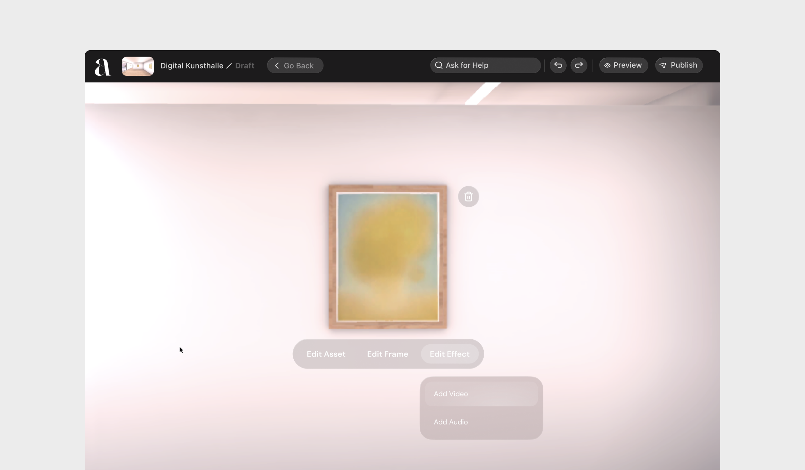
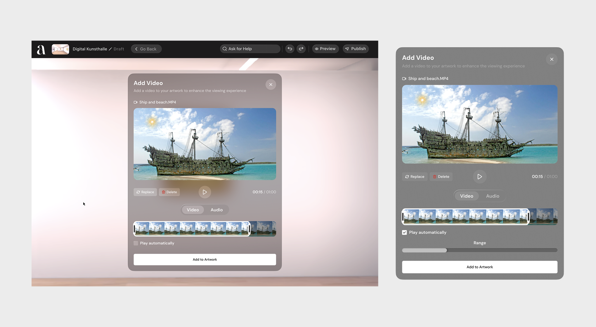
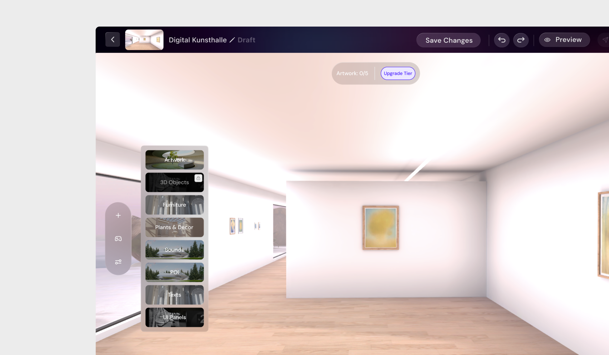
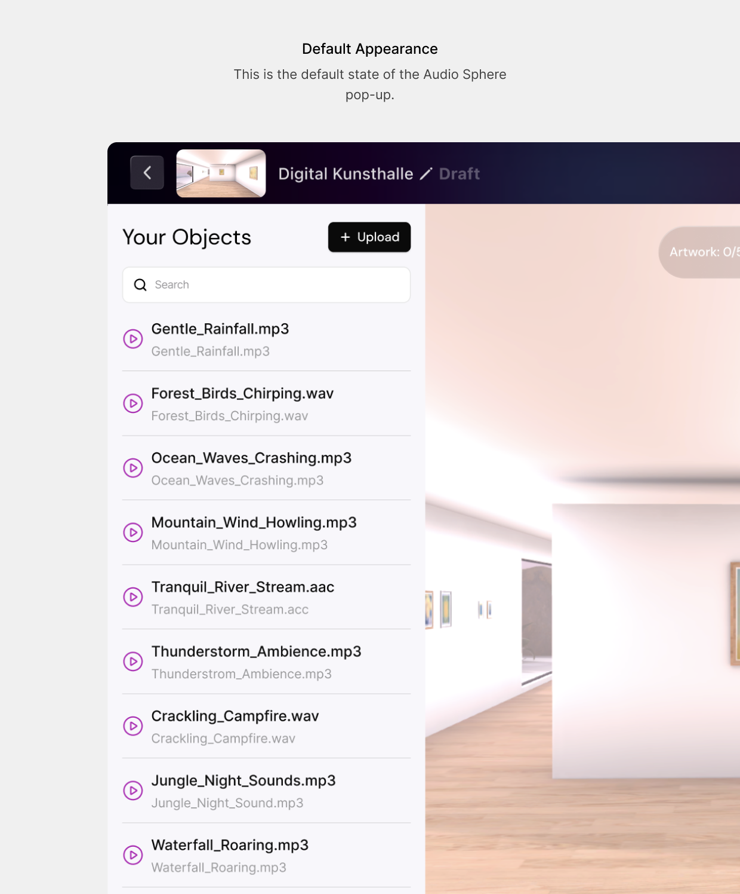
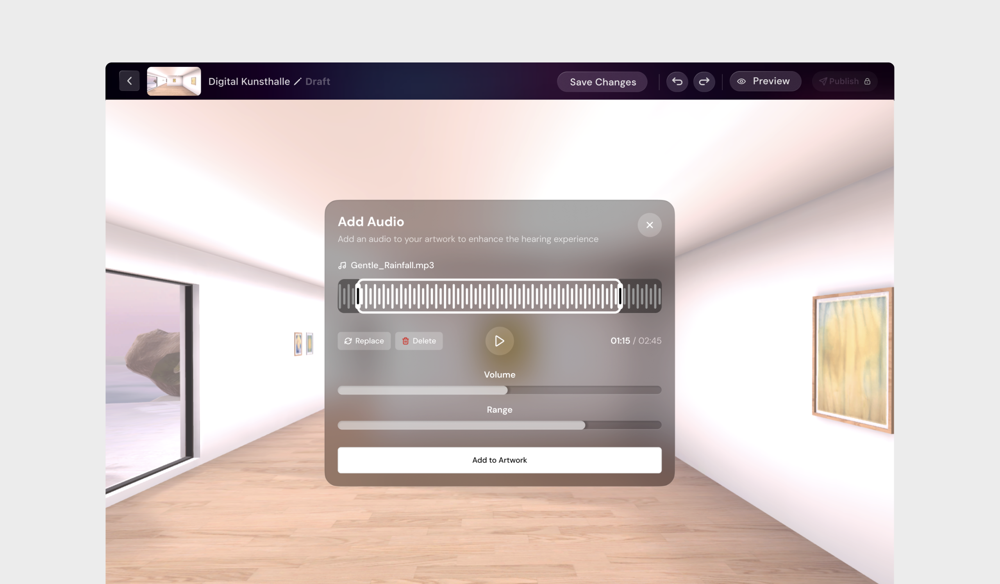
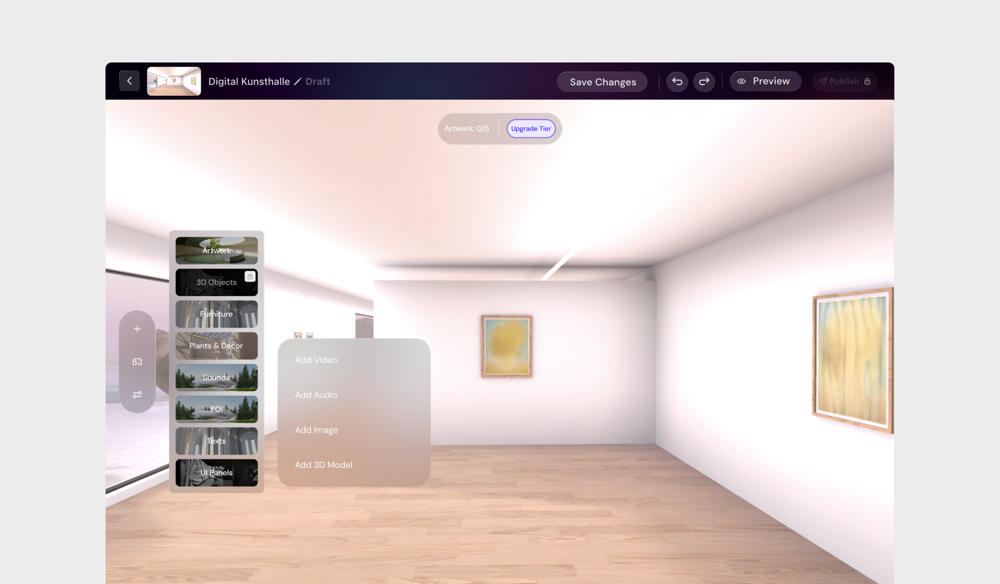
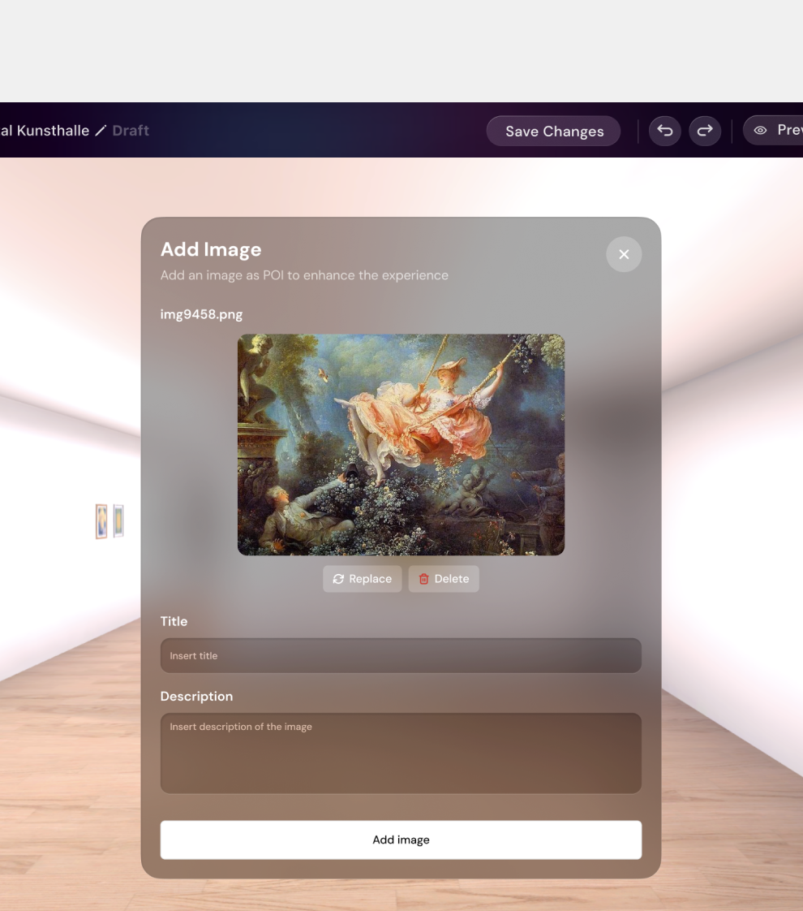
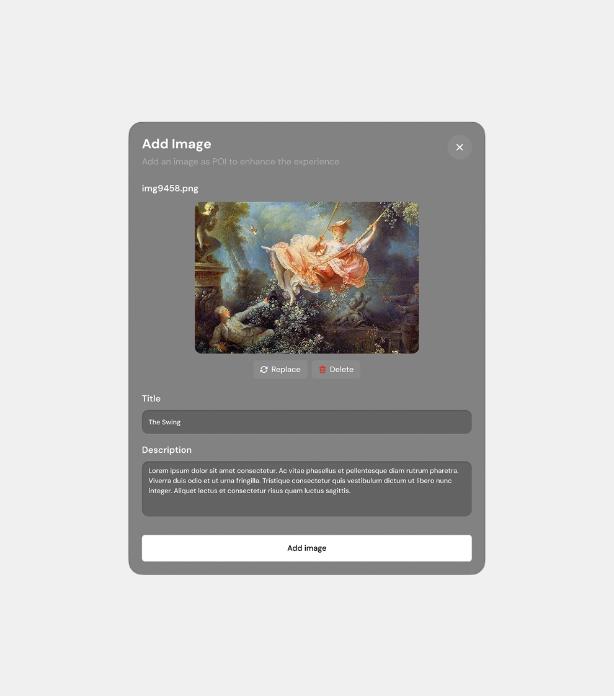
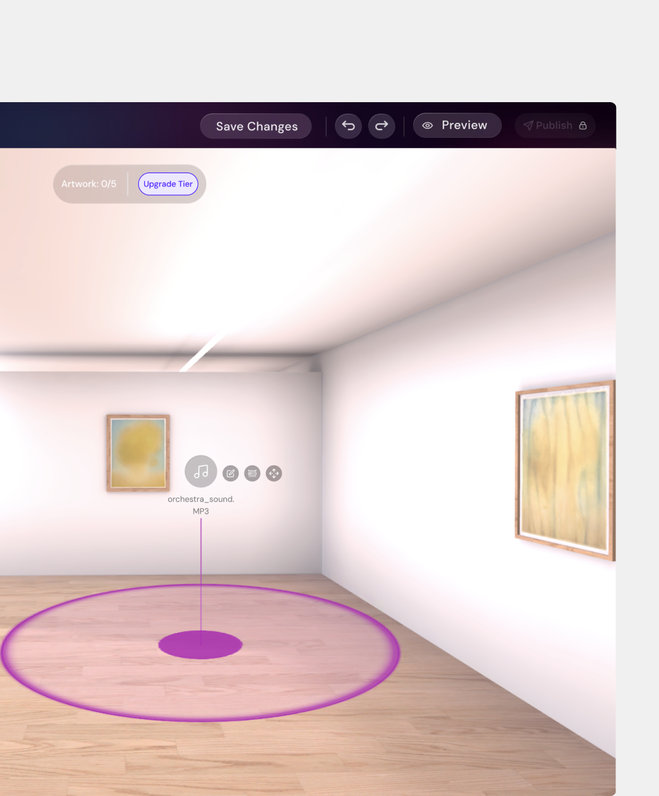
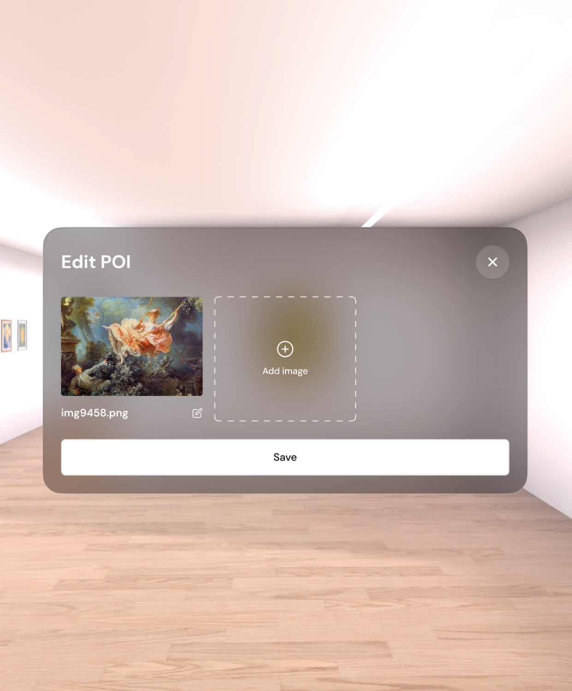

Atopia Space
Building a VR art gallery from scratch usually means hiring a game developer. Atopia Space set out to change that, letting artists build and publish immersive 3D/VR exhibitions without touching a game engine. The catch: spatial tools like ambient sound and object tethering are inherently 3D concepts, and translating them into something a non-technical artist could use on a flat 2D screen is genuinely hard.
I designed a modular web-based spatial editor that abstracts those 3D mechanics into intuitive, drag-and-drop interactions. Creators place attachments and set visual radius controls directly in the browser, no code, no game engine, and craft full VR environments from there.
Object-Attached Multimedia
In a physical gallery, a curator can rely on a plaque or a tour guide to explain an artwork’s context, but in VR, static 2D text panels break immersion. Attaching audio-visual files to 3D objects is usually a technical process built for game developers, not fine artists. I designed a seamless web interface that lets artists tether multimedia directly to specific art objects, so when a visitor interacts with the piece in VR, the media feels native to the object instead of a disconnected pop-up.
Contextual Modals & Inline Trimming
Instead of sending creators to a separate media management page, clicking any artwork triggers an immediate contextual modal. Through “Add Media,” users attach audio or video directly to the object and use inline trimming tools to select playback segments, no external editing software needed.

Proximity vs. Manual Interaction Triggers
Spatial trigger controls are built directly into the media properties. Creators choose whether media plays manually on interaction, or auto-plays within a set radius as the visitor approaches the artwork in VR.

Spatial Audio Spheres
Virtual galleries lack the acoustics of physical spaces and feel sterile by default, and while background music is easy to add, it isn’t immersive. Mapping localized sound (like waves near a seascape painting) to specific areas means manipulating invisible audio zones on a 2D screen, which is cognitively hard. I designed “Audio Spheres” that let creators place and choreograph how sound fades in and out as visitors move through the gallery, turning a static 3D model into a curated sensory space.
Unified Asset Library & Inline Verification
Adding an audio sphere opens a universal quick-add menu that pulls from a side-panel Asset Library, retaining previously used files for reuse instead of forcing a new upload every time. Inline playback lets users preview a track’s atmosphere before committing it to the space.


Simplifying 3D Acoustics
Translating 3D sound physics into a 2D interface is complex, so I abstracted it into a focused configuration modal: creators set default volume and define the spatial activation range (how close a visitor must be to trigger the audio) through simple range inputs and visual boundaries, no audio engineering knowledge required.

Standalone Points of Interest
Tying all curatorial information to art objects restricts what a creator can do. Curators often need to guide visitors along a path, add historical context, or leave spatial trivia in empty corridors, all independent of any specific artwork. I introduced the standalone Point of Interest (POI): an independent spatial anchor supporting 2D images, 3D objects, audio, and video, letting creators build trails, lore, or wayfinding markers on their own terms.
Progressive POI Configuration
Adding a POI uses the same mental model as adding audio: the unified quick-add menu, format selection, and the same reused asset library, keeping the learning curve low as creators populate the space.



Rich Metadata & Asset Stacking
A POI functions as a full informational plaque, capturing titles and descriptions alongside its primary asset. To prevent visual clutter from dozens of individual markers, I built an “Asset Stacking” architecture that lets multiple assets of the same type group under one POI location, keeping the gallery clean while laying groundwork for future mixed-media clustering.


Outcome
The result is a spatial editor that gives non-technical artists tools that used to require a game developer. Context no longer breaks immersion through static text panels, sound design becomes something a curator can shape directly instead of settling for generic background music, and curatorial freedom is no longer boxed in by what’s physically attached to an art object. Atopia Space turns VR gallery-building from a technical exercise into a creative one.